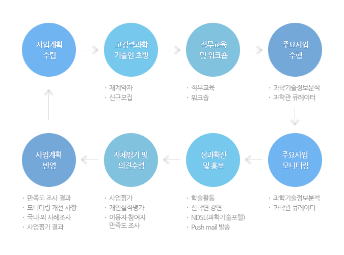

사업안내
추진체계
ReSEAT 프로그램의 추진체계입니다.
추진체계

고경력 과학기술인 인력풀 구축
<고경력 과학기술인 자격기준>
- 국내 과학기술계 정부출연연구기관, 과학기술관련 단체 및 기관, 대학, 기업연구소 등에서 퇴직한 다음 각 호에 해당하는 자
- 가. 과학기술계 정부출연 연구기관에서 책임연구원급으로 퇴직한 자
- 나. 대학에서 부교수급 이상으로 퇴직한 자
- 다. 산업체에서 연구 및 기술개발 담당 이사급 이상으로 퇴직한 자
- 라. 연구개발 및 과학기술정책 관련 경력이 20년 이상인 자
- 지원 당시의 연령이 만 50세 이상인 자
- 타 기관에 정규직 또는 상근직으로 재직하지 않으며 다음 각 호를 충족하는 자
- 가. 고용보험 미가입 자
- 나. 사업자등록을 하지 않은 자
- 다. 타 과학기술기금사업에 참여하고 있지 않는 자
고경력 과학기술인 워크숍
- 상반기 워크숍 : 사업운영계획 발표, 활동계획수립
- 신입 고경력과학기술인 워크숍 : 오리엔테이션
- 하반기 워크숍 : 사업성과분석 및 자체평가, 분과위원장/간사 선출
직무교육
- 정보화기본교육 : 윈도, 한글, 엑셀, 인터넷, ReSEAT 웹사이트 등
- 정보검색교육 : 학술정보, 특허정보, 산업/시장정보, 전자저널 등
- 정보분석교육 : 정보분석개론, 학술정보분석, 특허정보분석, 산업·시장분석 등
- 큐레이터 소양교육 : 심층해설 및 과학꿈나무 멘토링 소양교육
※ 고경력 과학기술인이 업무를 원만하게 수행할 수 있도록 교육 실시
홈페이지를 통한 온라인 운영체제 구축
- 과제공고 및 성과물 게재 등
공동연구센터 운영
- KISTI : 대전 본원, 서울 분원
- 국립과학관 : 국립중앙·서울과학관